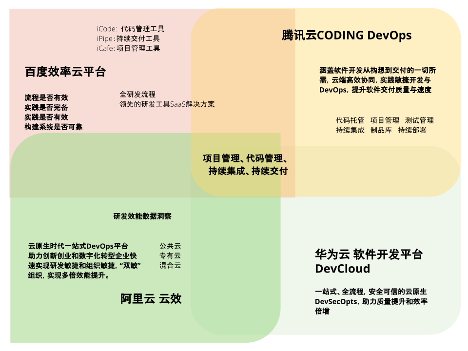
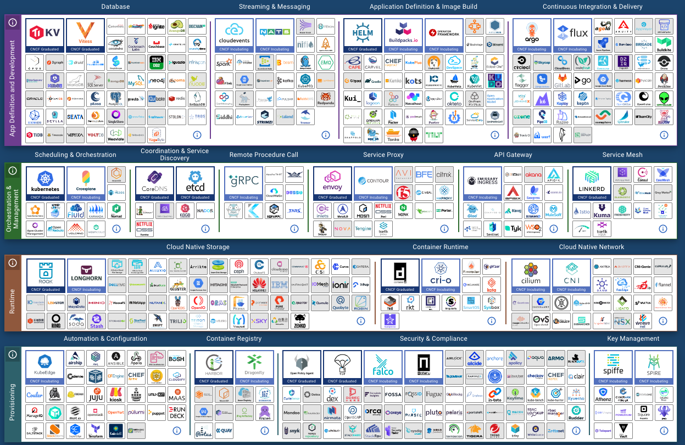
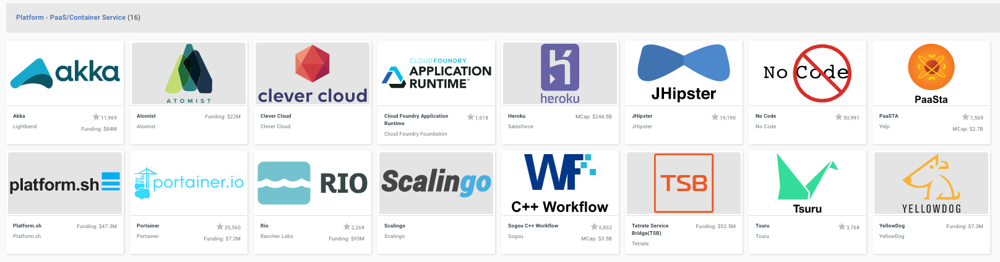

2022给自己立一个flag: 手工打造一个专注于高品质的交付平台 - GitAction。
本着少既是多，慢即是快，以及做正确的事为原则。
从理念、设计，到实现，一步步手工打造，记录并分享。
平常也会做知识的梳理和分享，但总感觉零散不成章节。
希望从2022年开始，用一个点子的孵化历程为主线，来串联所有的知识点，形成体系。
根据知识点的特征，将其分为长衰变周期，和短衰变周期。
将重点放在长衰变周期上，比如算法、操作系统、计算机原理、网络、数据库等等。
进行详细学习和分享，并将把他人教会，作为目标，和大家一起探讨和学习，查漏补缺。
为了言之有物，结合可工作的软件，将平时的思考和疑问，分享出来，帮助探讨，互相学习。
既不纯理论，也不全程coding，更多的希望是互相交流，互相学习。
未来的云计算会是什么样？
企业都将上云。
因为云计算的本质就是计算能力集中管理，高效分配。
这从根本上就注定了云计算应该是大规模的，集中化的。
从这个角度来看，私有云本身就是一个伪云理念。
所有的私有云之所以要私有，根本原因是现在云计算不能让客户有百分百的安全感。
对数据没有安全感，对各种软件漏洞没有安全感。
随着时间的推移，这些技术只会越来越成熟，法律法规也会越来越健全。
到那时，私有云没有任何理由。
我们面对的问题就是在这期间，如何用现有的技术满足不同的需求。
云计算影响到的不仅仅是企业用户。
还有个人用户，比如自由职业者，私营老板，创业者，等等。
企业中的个人需求，如快速验证一个点子的企业员工，也有这种轻量级的开发需求。
企业如何帮助孵化这些点子，将会是企业创新能力的重要源泉。
云计算上的敏捷会是什么样？
工具是越来越多，也越来越方便，但多也意味着复杂，学习成本高。
有没有可能让大家将时间，高效的放在在创新的点子上，而不是消耗在越来越多的工具学习中。
敏捷对团队的要求一直很高。如全功能团队，团队规模在10人以内。
这些都要求团队里的个人能力很强。
学习学习和掌握的知识也很多，以便团队可以快速高效的消除瓶颈，或者减少瓶颈带来的影响。
这就要求大家能在关键时刻互相帮忙，这样在出现瓶颈的时候，大家可以劲往一处使。
在精益生产中，很重要的一个理念就是减少浪费。
认为只有交付到用户手上的产品才是有价值、有意义的。
而其它在库存里的成品，或者在生产线上的半成品-WIP，都属于没有给企业创造价值的部分，也被视为浪费。
要减少浪费，对团队的综合实力要求也就比较高。
因为这意味着要消除短板。
敏捷选择鼓励并相信人的主动性的，不鼓励事无巨细的流程化、文档化。
而敏捷实践很好的体现了这一点。
比如TDD，Pair，Code Review，等等。都是以人作为主导，并没有明确的流程和指标来说明好或坏。
这样的好处是大家可以足够灵活，持续改进。
不利的一面则是这完全是根据团队对敏捷理解，需要经历一遍又遍的重复。
希望每个团队都找到适合自己的敏捷。但这恰恰对团队提出了一个更高的要求。
如果借助军队里作战团队，来比喻敏捷团队。
那敏捷团队对应的就是海军陆战队。
要求团队个人能力很强，互相配合和支撑，灵活面对各种突发情况，并高效完成任务。
那有没有可能让小米加步枪的团队，也能拥有海军陆战队的战力呢？除了人员能力培训，是否还有其它的方法帮助到团队，在面对各种挑战？
随着云计算的不断发展，大大方便了企业和个人。
比如设备、机房、光纤、电力等等，大家都不用再关心了，都由云服务提供商来保障。
这就像电话服务一样。基站、电缆、光纤等这些基础设施我们都不用关心，只管打电话和上网就行。
在传统消费观念中。
大家还是喜欢为看得见，摸得着的商品付费。
比如电脑和MP3等实实在在的设备。而不是电脑里的操作系统，和MP3里的歌曲。
正因为这些原因，最开始在卖电脑的时候，软件如操作系统，对于最终用户而言都是免费的，最早的磁盘DOS操作系统就是收的装机费，还很便宜。
哪怕后来如日中天的Windows操作系统，在很多用户眼里，也应该是免费的。MP3里的歌曲就更不要想着收费了。
云计算最大的用户群，当属于企业用户。
在这些用户里，大部分都自建过机房，都明白这其中的成本和运维的复杂度。
上云后，云服务的成本直观可见，所以大家对云服务的认可度还是很高的，从目前上云的程度就能看出。
因为相较于自己管理的成本，云服务的成本优势更是显而易见，这也是云计算的核心竞争力 - 管理的又好，又实惠。
这样大家的接受度也自然就高了，是互利互惠，正向的循环。
因为天生就能自带了付费习惯的优势，云服务的发展自然会比操作系统和MP3的发展更加有利于行业的发展。
随着智能手机的发展和普及，广大消费者能更经济和方便的享受手机带来的服务。
如音乐、影视、办公服务方方面面。随着法律法规的完善，在方便消费者的同时，也保障了创作者，最终让整个服务生态变得更健康，充满活力。
云计算也一样，随着云计算的不断完善，越来越多基于云计算的服务也如雨后春笋，遍地开花。
从云原生提供的服务就可以看出，数量越来越多，覆盖面也是越来越广。
这也是为什么选择云计算方向的原因。
云基础设施越来越完备，生长在上面的服务也自然越来越丰富。
我们可以从服务的角度来看看大家分别从什么角度来应用云计算的。
研发效能的前生是研发效率，早在2014年，百度就成立了研发效率部。
那时候该部门更多的职责就是规范研发部生产流程，以衡量和提高研发效率为目的。
也在同一年，DORA发布了DevOps行业报告。除了2020年不知道什么原因断更外，基本上是每年必更，一直到现在。
在最新的2021年报告中，和研发效能相关的描述有如下片段：
“To meet the demands of an ever-changing industry, organizations must deliver and operate software quickly and reliably. The faster your teams can make changes to your software, the sooner you can deliver value to your customers, run experiments, and receive valuable feedback. ” - Accelerate State of DevOps 2021
说的是，企业如果想要赢得瞬息万变的市场，需要具备快速并可靠的交付和运营软件的能力。

通过上图，我们可以看出，国内几大云厂商，基于云计算，对研发效能的理解：
共识点：
个性点：
这样看来，这几家都完全买单研发效能的理念，主动进入到了研发效能的大舞台。
经过持续投入，孵化并以云的形式开放了这些服务。
基于自身的文化和特长，和对研发效能的不同理解，强化了自己的个性和擅长点。
可以看出解决的问题还是为了提高效率，提升体验。
变化的是从线下到了线上，从企业内自己用，到发布到线上，所有人都可以用。
来看一张简略版全家福：

可谓是琳琅满目，数不胜数。
仅从这就能看出云计算所创造的巨大市场，让用户在云上就能挑选到所有你需要的产品和服务。
就像我们的线上商城一样。
结合CNCF这张局势图，很快我们就能发现，目前只要能想到的，基本上都有人在做了，而且还很多。
大的领域都分好了，那就找个细分的吧。
想让自己的开发体验更好，直观的感受就是属于PaaS这个领域。

目前排在头部的就是Heroku了。
那我们要做的和Heroku有什么不一样呢？
再细分的话，就选自己擅长和感兴趣的吧，这样长能坚持。
像工程实践、敏捷、容器化、研发效能等等。
这样初步定位也就出来了：高效能敏捷研发平台
和Heroku相比，具体有哪些不一样的功能呢？
既然不是通用研发平台，主打的是高效能和敏捷。
那我们的用户先锁定在敏捷组织和团队。
需要综合考虑组织文化和敏捷实践，前期锁定在研发人员，专注于提供高品质的服务。